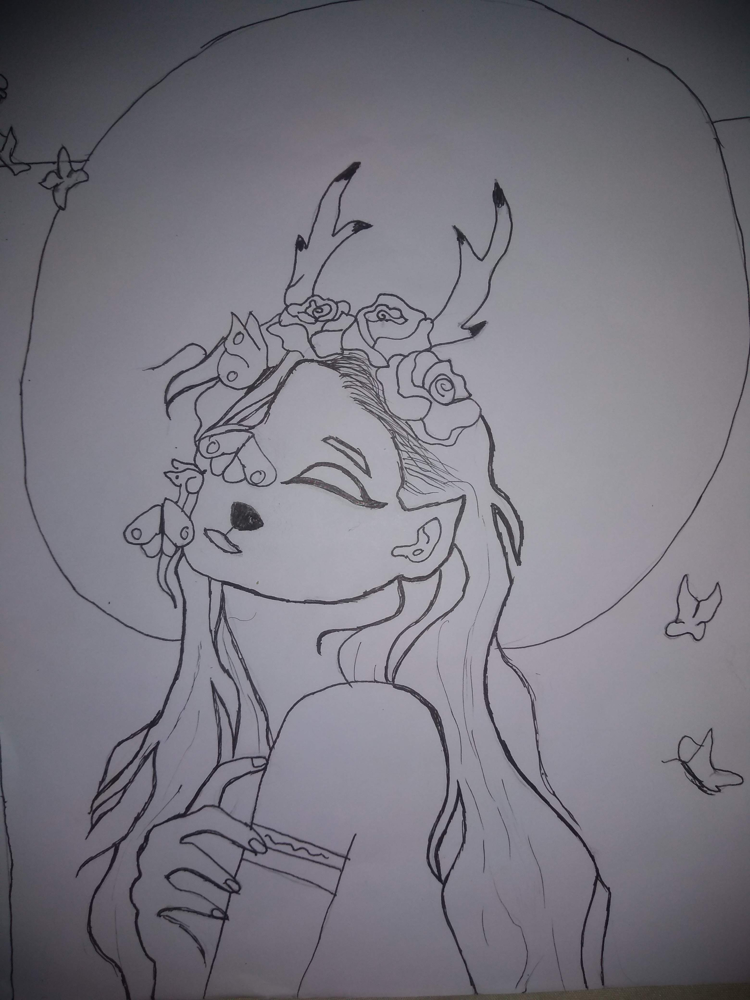
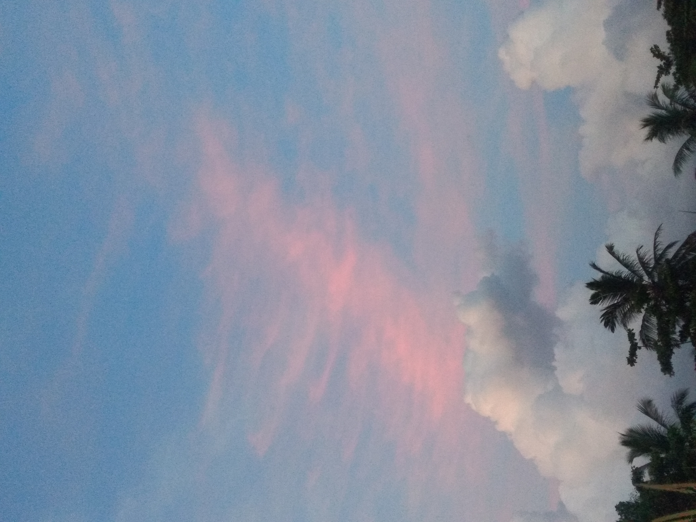
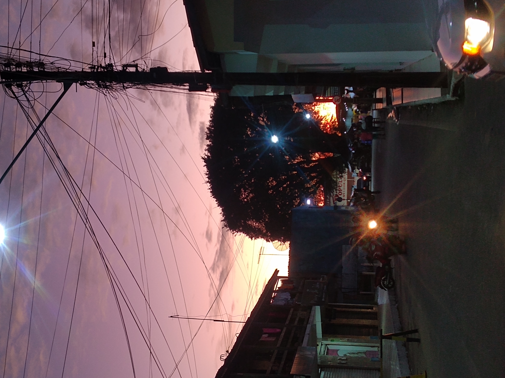
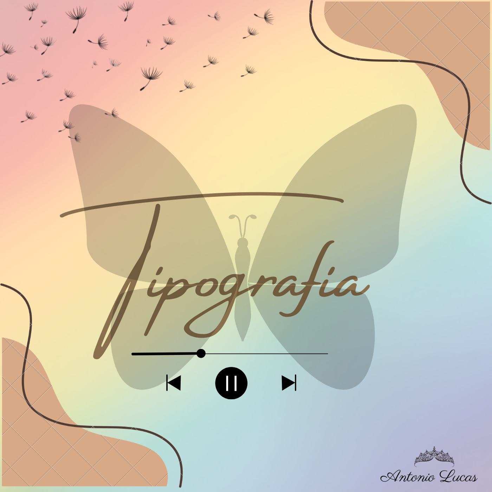

Bem vindos ao meu mundo
Ola, me chamo Lucas, tenho 21 anos, estou cursando faculdade de design de produtos, quase a concluir. Atualmente morando com meus avos. Bom não temho muitas coisas a falar sobre a minha pessoa, ainda não comecei a viver a vida. Durante a minha vida passei por muitos altos e baixos, assim como maioria das pessoas existentes nesse mundo, conflitos que quase me fizeram desistir de tudo, mas sempre que meus pensamentos pediam pra mim dessistir eu me refugiava nos meus desenhos, escrevia músicas,escrevia historias a fim de fugir desse mundo que tanto me prendia em algo que eu não sou. Bom esse é um resumo da minha história, meus próximos capitulos ainda estão para ser escritos, e ate la eu vou escrevendo e modelando o meu caminho.
Quem sou eu ?
Bom nem eu mesmo sei, mas sou alguém que gosta de desenhar, gosta de estar criando coisas, escrevendo histórias cuja finalidade é sobre o amor entre pessoas, sou alguém que sonha alto e que quer chegar no meu destino onde eu me sinta no meu lugar, alguém que tenta por mais que as dificuldades me paralizem, uma pessoa que vê a feliciade nos detalhes mais pequenos. É resumindo eu sou alguém que ama a vida mesmo que um dia eu quissese desistir dela.
Coisas que eu gosto de fazer
DESENHO

PAISAGENS
 MÚSICAS
Bom esse é um resumo da minha vida e das coisas que eu mais gosto de fazer, ainda tenho muito o que falar sobre mim mais estou a descobrir muito sobre quem sou, e qual é meu caminho. Mais ate aqui é isso e ate uma proxima, agradeço por chegar ate aqui.